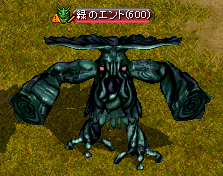

| 賢者ゲイツとの出会い |
荒廃都市ダメルにいる賢者ゲイツが、大変興味深い話をしてくれるという。もう一度話しかけてみよう。
賢者ゲイツが、ロマ村 ビスルのアシャス・フェンに会って、転生に関する話を聞き、新しい人生を始めてみるように言われた。ロマ村 ビスルへ行ってみよう。
|
| 受諾場所 |
荒廃都市ダメル 賢者ゲイツ（55.34） |
| 受諾条件 |
Lv600 キャンセル不可 |
| 報酬 |
- |
| 荒廃都市ダメル |
賢者ゲイツへ |
| ロマ村 ビスル |
アシャス・フェン（30.35）へ |
| アシャス・フェンの転生法 |
アシャス・フェンは、忙しいことを理由にちゃんと話をしてくれない。粘り強く、もう一度話しかけてみよう。
アシャス・フェンが、運命の綛糸について話してくれるという。もう一度話をしてみよう。
アシャス・フェンに、運命の綛糸を巻く綛糸機を作るための材料を集めてくるように言われた。まずば、彼に言われた通り新興王国ビガプールのアレン婦人を訪ねよう。
|
| 受諾場所 |
ロマ村 ビスル アシャス・フェン（30.35） |
| 受諾条件 |
Lv600 キャンセル不可 |
| 報酬 |
- |
| ロマ村 ビスル |
アシャス・フェンへ
アシャス・フェンへ |
| 新興王国ビガプール |
アレン婦人（25.149）へ |
| 運命の綛糸 製作 1 |
新興王国ビガプールのアレン婦人から、大きな町 バリアートに住んでいる父親のマルトンに手紙を届けてほしいと頼まれた。大きな町 バリアートに行ってみよう。
大きな町 バリアートのマルトンから、自分の返事をアレン婦人に届けてほしいと頼まれた。再び新興王国ビガプールに戻ろう。
アレン婦人から、白い絹糸をもらったら、次は神獣の体液を手に入れるためにモリネルタワー 地上４階に行ってみよう。神獣の体液は、モリネルタワー 地上４階にいるブレイザーから手に入れることができるらしい。
|
| 受諾場所 |
新興王国ビガプール アレン婦人（25.149） |
| 受諾条件 |
Lv600 キャンセル不可 |
| 報酬 |
- |
| 大きな町 バリアート |
マルトン（26.82）へ |
| 新興王国ビガプール |
アレン婦人へ |
| モリネルタワー 地上４階 |
ブレイザー（Lv620)Zinを倒す |
| 運命の綛糸 製作 2 |
神獣の体液が手に入ったので、最後は伐木町ブレンティルにいる大工のジョーンに会って、黒い太針を分けてもらえるか聞いてみよう。
伐木町ブレンティルにいる大工のジョーンに、グレートフォレスト ネイブ滝付近にいる緑のエントからエントの枝を手に入れてきてほしいと頼まれた。グレートフォレスト ネイブ滝付近の緑のエントから手に入れてこよう。
エントの枝が手にはいったので、再び伐木町ブレンティルに戻ってジョーンと話をしてみよう。
白い絹糸と神獣の体液、そして黒い太針がすべて集まった。ロマ村 ビスルのアシャス・フェンのところに戻ろう。
|
| 受諾場所 |
モリネルタワー 地上４階 |
| 受諾条件 |
Lv600 キャンセル不可 |
| 報酬 |
- |
| 伐木町ブレンティル |
ジョーン（43.18）へ |
| グレートフォレスト ネイブ滝付近 |
緑のエント（Lv600)Zinを倒す、Lv低下攻撃あり
 |
| 伐木町ブレンティル |
ジョーンへ |
| ロマ村 ビスル |
アシャス・フェン（30.35）へ |
| 転生 |
アシャス・フェンに、運命の綛糸を巻くので少し待つように言われた。再びアシャス・フェンと会話をすれば転生することができるだろう。
|
| 受諾場所 |
ロマ村 ビスル アシャス・フェン（30.35） |
| 受諾条件 |
Lv600 キャンセル不可 |
| 報酬 |
1次転生 転生者Lv1 |
| ロマ村 ビスル |
アシャス・フェンへ |